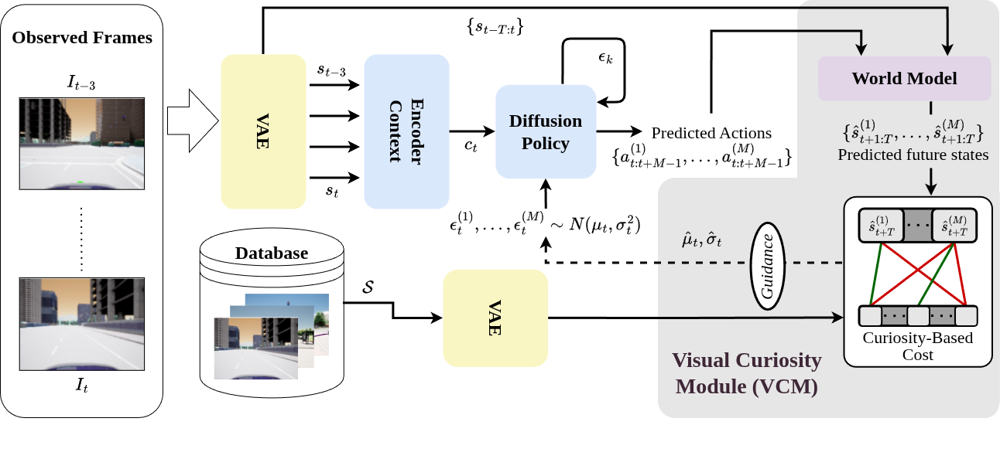

Mobile agents require efficient exploration strategies to map unseen environments and autonomously plan tasks. Traditional methods rely on generating occupancy maps and optimizing the sequence in which unexplored regions are visited. However, in sensor-constrained settings, such as those limited to monocular cameras, generating accurate occupancy maps is challenging. To address this, we propose VANDERER, an exploration framework that leverages a Visual Curiosity Module (VCM) to guide pre-trained diffusion policies using only monocular image data. This curiosity module predicts the outcomes of proposed actions via a navigation world model and evaluates them through a curiosity cost. The cost then guides the diffusion process toward generating actions that maximize exploration. Evaluated across diverse simulated environments, VANDERER consistently outperforms established baselines, exploring an average of 13.4% more area than NoMaD. Our results reveal a direct correlation between visual and geometric curiosity in outdoor environments, demonstrating that VANDERER can effectively leverage this relationship for efficient exploration using sensor-constrained agents.

A pre-trained diffusion policy proposes candidate action sequences from monocular observations. The Visual Curiosity Module rolls each candidate forward through a navigation world model and scores it with a curiosity cost; this cost guides the diffusion denoising process toward actions that maximize exploration — all without building an explicit occupancy map.
Exploration rollouts produced by VANDERER in simulation.
Bird's-eye exploration trace
Agent point-of-view rollout
Exploration rollout
Exploration rollout
@article{vanderer2026,
title = {VANDERER: Map-Free Exploration using Future-Aware and Visual-Curiosity-Guided Diffusion Policy},
author = {Devarakonda, Venkata Naren and Goswami, Raktim Gautam and Krishnamurthy, Prashanth and Khorrami, Farshad},
journal = {TODO},
year = {2026}
}